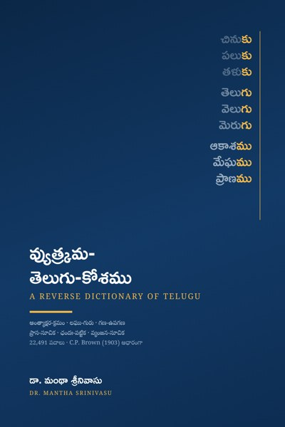

వ్యుత్క్రమ-తెలుగు-కోశము
A Reverse Dictionary of Telugu
Google PlayLibraryపద్యం రాసే కవికి కావలసింది ఒక నిర్దిష్ట అక్షరంతో ముగిసే పదం, రెండవ అక్షరంలో ఒక నిర్దిష్ట హల్లు గల పదం, లేదా గణానికి సరిపడే లఘు-గురు క్రమం గల పదం. సాధారణ నిఘంటువు మొదటి అక్షరం నుండి వెతుకుతుంది; ఈ కోశము చివరి అక్షరం నుండి వెనుకకు అమర్చబడింది. ఒకే అంత్యంతో ముగిసే పదాలన్నీ ఒకచోట నిలుస్తాయి: చినుకు · పలుకు · తళుకు, తెలుగు · వెలుగు · మెరుగు.
గ్రంథంలో:
• 22,491 తెలుగు పదాలు, అంత్యాక్షర క్రమంలో (వర్ణమాల క్రమం)
• ప్రతి పదానికి: అక్షర-సంఖ్య, లఘు-గురు క్రమం, గణం, ఉపగణం, మూలం (తత్సమ/తద్భవ/దేశ్య/అన్యదేశ్య), సంక్షిప్త ఆంగ్లార్థం
• అనుబంధాలు:
– ప్రాస-సూచిక (రెండవ అక్షరం ఆధారంగా)
– ఛందః-పట్టిక (2–5 అక్షరాల పదాలు లఘు-గురు క్రమాన్ని బట్టి)
– సూర్య-ఇంద్ర ఉపగణాలు (కందం, ఆటవెలది, తేటగీతి, సీసం కోసం)
– అనులోమ-విలోమ పదాలు, వ్యంజన-సూచిక (యమకం, చిత్రకవిత్వం కోసం)
కవులకు, అవధానులకు, పద్యరచన నేర్చుకునే విద్యార్థులకు, భాషా పరిశోధకులకు ఉపయోగపడే సూచిక.